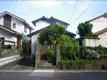
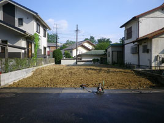
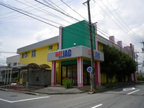
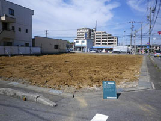
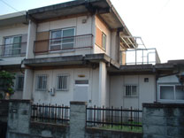
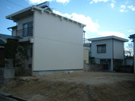

写真はイメージです
当社は愛知県春日井市を中心に解体工事を承っています。
木造住宅、鉄骨建築、鉄筋コンクリート造や、テナント事務所・店舗など、建築様式を問わず解体工事が可能です。
地域に根付いた解体専門の業者です。下請業者に発注するわけではありませんので、中間マージンが発生しません。
工事前には必ず、近隣へ誠意を持って丁寧なご挨拶を行ったうえで解体工事を行います。万が一トラブルが発生した際も、速やかに対処いたします。
解体工事の完了後にも、再度ご近所様へご挨拶をおこないます。「本当にご迷惑はなかったか？」を確認するためです。
株式会社丸信にて施工を行いました事例をご紹介します。






※補修工事共
ご相談から工事完了後のご挨拶までの、主な流れです。
※春日井市より車で1時間半のエリア内
上記の対応エリア以外にも柔軟に対応させていただきます。まずはお気軽にお問い合わせください。
もちろん、お見積もりは無料です。
スピード対応でお待たせせず、お客様にわかりやすいお見積もりをご提供いたします。
お見積もりは当ホームページのお問い合わせフォームから、もしくはお電話（0568-29-7788）よりお気軽にお申し付けください。
当社は愛知県春日井市を中心に解体工事を承っています。主な対応エリアは下記の通りです。
※春日井市より車で1時間半のエリア内
上記の対応エリア以外にも柔軟に対応させていただきます。まずはお気軽にお問い合わせください。
一般的なゴミとして廃棄ができない植木や庭石・石垣等は処分に困ります。
当社では、植木や庭石・石垣等も有料になりますが処分いたします。
植木や庭石・石垣等の処分についてもお気軽にご相談ください。
樹木・雑木林のみの撤去や駐車場のアスファルトのみの撤去といった、撤去のみの解体工事についても行わせていただいております。
各種撤去についてもお気軽にご相談ください。
当社ではビル・マンションや工場等についても解体工事の実績が多数ございます。
ビル・マンションや工場等の解体工事を検討されるのであれば、まずはお気軽にご相談ください。